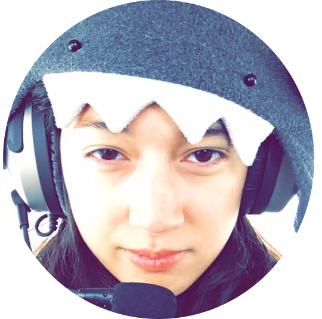

Rachel Schifano
iOS Software Engineer on
StateFarm
's
Drive Safe & Save
team
B.S. in Computer Science graduate from Illinois State University
Originally fine artist accepted into
School of the Art Institute of Chicago
Former hackathon organizer, founded
RedbirdHacks
Square
College Code Camp
alumna/volunteer
National Italian American Foundation
heritage scholarship winner
Lead metal guitarist
with an affinity for
Nordic/Scandinavian metal
and
melodic death metal
Outdoor DJ, replaced my car radio with a Pioneer radio to DJ in the middle of corn fields
SoundCloud
fan but I joke that my other job is #AppleMusicCurator
Racecar driver, autocross in my
beloved 1999 Mazda Miata
Student pilot
if there is
and
.
Hoping for a Women in Aviation Scholarship
Obsessively picks up any new interest and hobby not previously conqured just to learn.